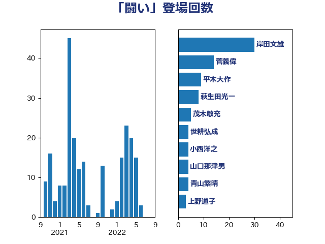

単語「闘い」

| 岸田文雄 | 自由民主党 | 30 回 |
| 菅義偉 | 自由民主党 | 14 回 |
| 平木大作 | 公明党 | 9 回 |
| 萩生田光一 | 自由民主党 | 8 回 |
| 茂木敏充 | 自由民主党 | 5 回 |
| 世耕弘成 | 自由民主党 | 4 回 |
| 小西洋之 | 立憲民主党 | 4 回 |
| 山口那津男 | 公明党 | 4 回 |
| 青山繁晴 | 自由民主党 | 4 回 |
| 上野通子 | 自由民主党 | 3 回 |
| 勝部賢志 | 立憲民主党 | 3 回 |
| 寺田静 | 無所属 | 3 回 |
| 柴田巧 | 日本維新の会 | 3 回 |
| 河野義博 | 公明党 | 3 回 |
| 田嶋要 | 立憲民主党 | 3 回 |
| 赤羽一嘉 | 公明党 | 3 回 |
| こやり隆史 | 自由民主党 | 2 回 |
| 三木亨 | 自由民主党 | 2 回 |
| 伊藤孝恵 | 国民民主党 | 2 回 |
| 佐々木さやか | 公明党 | 2 回 |
| 加藤竜祥 | 自由民主党 | 2 回 |
| 古賀友一郎 | 自由民主党 | 2 回 |
| 吉良よし子 | 日本共産党 | 2 回 |
| 宮口治子 | 立憲民主党 | 2 回 |
| 山下芳生 | 日本共産党 | 2 回 |
| 岸真紀子 | 立憲民主党 | 2 回 |
| 川田龍平 | 立憲民主党 | 2 回 |
| 平井卓也 | 自由民主党 | 2 回 |
| 柘植芳文 | 自由民主党 | 2 回 |
| 梅村聡 | 日本維新の会 | 2 回 |
| 森本真治 | 立憲民主党 | 2 回 |
| 江島潔 | 自由民主党 | 2 回 |
| 浜田聡 | NHK党 | 2 回 |
| 石川博崇 | 公明党 | 2 回 |
| 石橋通宏 | 立憲民主党 | 2 回 |
| 石田昌宏 | 自由民主党 | 2 回 |
| 自見はなこ | 自由民主党 | 2 回 |
| 谷合正明 | 公明党 | 2 回 |
| ながえ孝子 | 無所属 | 1 回 |
| 三浦信祐 | 公明党 | 1 回 |
| 上川陽子 | 自由民主党 | 1 回 |
| 上田英俊 | 自由民主党 | 1 回 |
| 井上哲士 | 日本共産党 | 1 回 |
| 今井絵理子 | 自由民主党 | 1 回 |
| 吉良州司 | 無所属 | 1 回 |
| 国定勇人 | 自由民主党 | 1 回 |
| 堀井巌 | 自由民主党 | 1 回 |
| 塩川鉄也 | 日本共産党 | 1 回 |
| 塩田博昭 | 公明党 | 1 回 |
| 大家敏志 | 自由民主党 | 1 回 |
| 安江伸夫 | 公明党 | 1 回 |
| 小熊慎司 | 立憲民主党 | 1 回 |
| 小田原潔 | 自由民主党 | 1 回 |
| 山崎誠 | 立憲民主党 | 1 回 |
| 山田勝彦 | 立憲民主党 | 1 回 |
| 徳永エリ | 立憲民主党 | 1 回 |
| 杉久武 | 公明党 | 1 回 |
| 東徹 | 日本維新の会 | 1 回 |
| 松野博一 | 自由民主党 | 1 回 |
| 武田良太 | 自由民主党 | 1 回 |
| 田村まみ | 国民民主党 | 1 回 |
| 田村憲久 | 自由民主党 | 1 回 |
| 石井章 | 日本維新の会 | 1 回 |
| 石井苗子 | 日本維新の会 | 1 回 |
| 石川大我 | 立憲民主党 | 1 回 |
| 礒崎哲史 | 国民民主党 | 1 回 |
| 福山哲郎 | 立憲民主党 | 1 回 |
| 福重隆浩 | 公明党 | 1 回 |
| 秋野公造 | 公明党 | 1 回 |
| 稲津久 | 公明党 | 1 回 |
| 穀田恵二 | 日本共産党 | 1 回 |
| 竹内真二 | 公明党 | 1 回 |
| 笠井亮 | 日本共産党 | 1 回 |
| 舞立昇治 | 自由民主党 | 1 回 |
| 若松謙維 | 公明党 | 1 回 |
| 菊田真紀子 | 立憲民主党 | 1 回 |
| 西田昌司 | 自由民主党 | 1 回 |
| 足立康史 | 日本維新の会 | 1 回 |
| 近藤和也 | 立憲民主党 | 1 回 |
| 金子恵美 | 立憲民主党 | 1 回 |
| 金村龍那 | 日本維新の会 | 1 回 |
| 長友慎治 | 国民民主党 | 1 回 |
| 馬場雄基 | 立憲民主党 | 1 回 |
| 高木かおり | 日本維新の会 | 1 回 |
| 高階恵美子 | 自由民主党 | 1 回 |